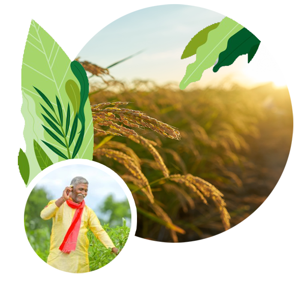

About Kisan
Brief Overview of the Kisan Portal
Unleashing the power of mobile in the hands of farmers to get information/advisories as per his or her preferences in the form of text/voice messages and getting access to numerous databases even without internet!
As per TRAI data of May, 2014, though there are about 38 crore mobile telephone connections in rural areas, internet penetration in the countryside is still abysmally low (in single digit percentage).
Therefore, mobile messaging is the most effective tool so far having pervasive outreach to nearly 8.93 crore farm families.
Kisan 2024 © All Rights Reserved.